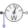

IMC_withLossesInduction machine with squirrel cage and losses |
|
Diagram
{kind=link}
Information
This information is part of the Modelica Standard Library maintained by the Modelica Association.
- Simulate for 10 seconds: The machine is started at nominal speed, subsequently a load ramp is applied.
- Compare by plotting versus PmechQS:
| Current | I_simQS | I_measQS |
| Speed | w_simQS | w_measQS |
| Power factor | pf_simQS | pf_measQS |
| Efficiency | eff_simQS | eff_measQS |
Machine parameters are taken from a standard 18.5 kW 400 V 50 Hz motor, simulation results are compared with measurements.
| Nominal stator current | 32.85 | A |
| Power factor | 0.898 | |
| Speed | 1462.5 | rpm |
| Electrical input | 20,443.95 | W |
| Stator copper losses | 770.13 | W |
| Stator core losses | 410.00 | W |
| Rotor copper losses | 481.60 | W |
| Stray load losses | 102.22 | W |
| Friction losses | 180.00 | W |
| Mechanical output | 18,500.00 | W |
| Efficiency | 90.49 | % |
| Nominal torque | 120.79 | Nm |
| Stator resistance per phase | 0.56 | Ω |
| Temperature coefficient | copper | |
| Reference temperature | 20 | °C |
| Operation temperature | 90 | °C |
| Stator leakage reactance at 50 Hz | 1.52 | Ω |
| Main field reactance at 50 Hz | 66.40 | Ω |
| Rotor leakage reactance at 50 Hz | 2.31 | Ω |
| Rotor resistance per phase | 0.42 | Ω |
| Temperature coefficient | aluminium | |
| Reference temperature | 20 | °C |
| Operation temperature | 90 | °C |
See:
Anton Haumer, Christian Kral, Hansjörg Kapeller, Thomas Bäuml, Johannes V. Gragger
The AdvancedMachines Library: Loss Models for Electric Machines
Modelica 2009, 7th International Modelica Conference
Parameters (12)
| PNominal |
Value: 18500 Type: Power (W) Description: Nominal output |
|---|---|
| VNominal |
Value: 400 Type: Voltage (V) Description: Nominal RMS voltage |
| INominal |
Value: 32.85 Type: Current (A) Description: Nominal RMS current |
| pfNominal |
Value: 0.898 Type: Real Description: Nominal power factor |
| PsNominal |
Value: sqrt(3) * VNominal * INominal * pfNominal Type: Power (W) Description: Nominal stator power |
| lossNominal |
Value: PsNominal - PNominal Type: Power (W) Description: Nominal losses |
| etaNominal |
Value: 0.9049 Type: Real Description: Nominal efficiency |
| fNominal |
Value: 50 Type: Frequency (Hz) Description: Nominal frequency |
| wNominal |
Value: from_rpm(1462.5) Type: AngularVelocity (rad/s) Description: Nominal speed |
| TNominal |
Value: PNominal / wNominal Type: Torque (N·m) Description: Nominal torque |
| TempNominal |
Value: from_degC(90) Type: Temperature (K) Description: Nominal temperature |
| imcData |
Value: Type: IM_SquirrelCageData Description: Induction machine data |
Outputs (13)
| PmechQS |
Default Value: powerSensorQS.power Type: Power (W) Description: Mechanical output |
|---|---|
| Ps_simQS |
Default Value: sqrt(3) * VNominal * I_simQS * pf_simQS Type: Power (W) Description: Simulated stator power |
| Ps_measQS |
Default Value: sqrt(3) * VNominal * I_measQS * pf_measQS Type: Power (W) Description: Simulated stator power |
| loss_simQS |
Default Value: Ps_simQS - PmechQS Type: Power (W) Description: Simulated total losses |
| loss_measQS |
Default Value: Ps_measQS - PmechQS Type: Power (W) Description: Measured total losses |
| I_simQS |
Default Value: currentQuasiRMSSensorQS.I Type: Current (A) Description: Simulated current |
| I_measQS |
Default Value: combiTable1DsQS.y[1] Type: Current (A) Description: Measured current |
| w_simQS |
Default Value: imcQS.wMechanical Type: AngularVelocity (rad/s) Description: Simulated speed |
| w_measQS |
Default Value: combiTable1DsQS.y[2] Type: AngularVelocity (rad/s) Description: Measured speed |
| pf_simQS |
Default Value: if noEvent(SelQS > Modelica.Constants.small) then PelQS / SelQS else 0 Type: Real Description: Simulated power factor |
| pf_measQS |
Default Value: combiTable1DsQS.y[3] Type: Real Description: Measured power factor |
| eff_simQS |
Default Value: if noEvent(abs(PelQS) > Modelica.Constants.small) then PmechQS / PelQS else 0 Type: Real Description: Simulated efficiency |
| eff_measQS |
Default Value: combiTable1DsQS.y[4] Type: Real Description: Measured efficiency |
Components (16)
| imcQS |
Type: IM_SquirrelCage |
|
|---|---|---|
| terminalBoxQS |
Type: MultiTerminalBox |
|
| electricalPowerSensorQS |
Type: PowerSensor |
|
| currentQuasiRMSSensorQS |
Type: CurrentQuasiRMSSensor |
|
| sineVoltageQS |
Type: VoltageSource |
|
| starQS |
Type: Star |
|
| groundQS |
Type: Ground |
|
|  | powerSensorQS |
Type: PowerSensor |
| loadInertiaQS |
Type: Inertia |
|
| torqueQS |
Type: Torque |
|
| gainQS |
Type: Gain |
|
| PIQS |
Type: PI |
|
| feedbackQS |
Type: Feedback |
|
| rampQS |
Type: Ramp |
|
| combiTable1DsQS |
Type: CombiTable1Ds |
|
| imcData |
Type: IM_SquirrelCageData Description: Induction machine data |